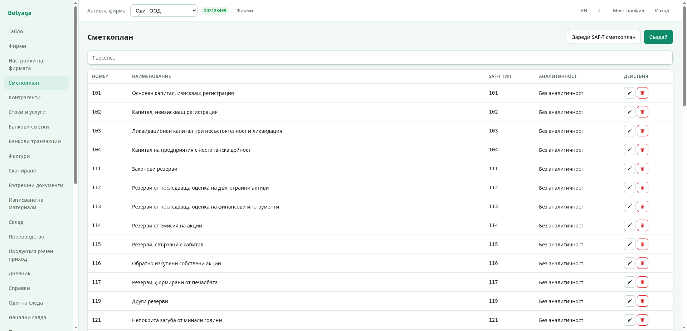

Начало · Сметкоплан и периоди
Сметкоплан и периоди
Структура на счетоводните сметки и начални салда.
Сметкоплан
Всяка сметка има номер, име, вид (аналитична/синтетична), тип и аналитичност (дали се води с количество). Стандартният сметкоплан е качен от НАП и може да се допълва. Сортировката е по номер.
Начални салда
Началните салда са дебит/кредит по сметка към 1 януари на годината и начално салдо по ДДС; те влизат в първата декларация.
Периоди
Месецът се отваря/затваря в Периоди. В затворен период не се осчетоводяват нови документи.
